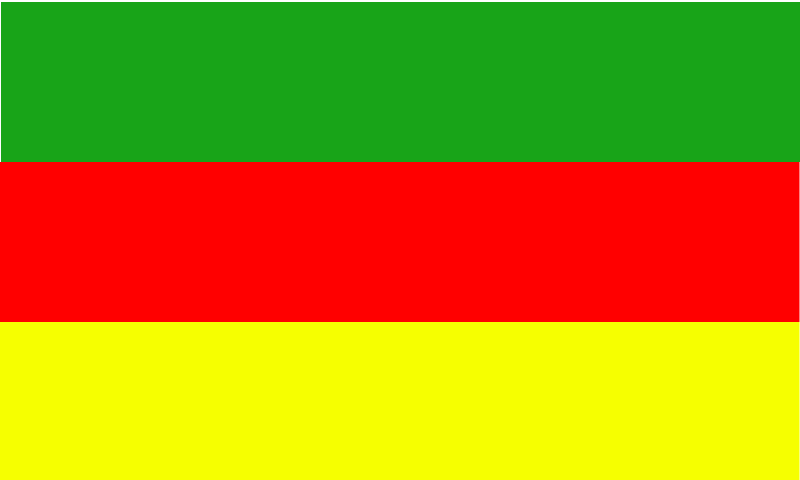
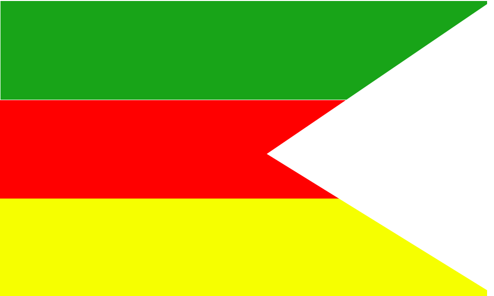
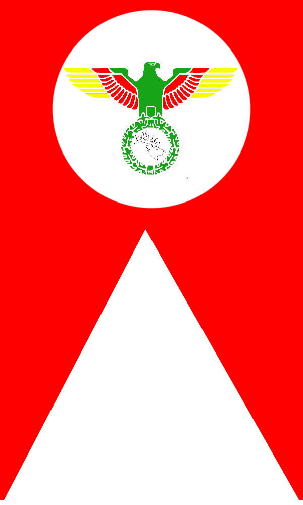

Jabir Empire


Jabir Empire is a new nation project, and placed in Marie Byrd Land, Atarctica. This nation is the newest state of the world, and unlike a lot of imaginary and fantasy nations, it's not a "micro" nation, it's a real nation, and exactly, it's an "unrecognized state" and "non-registered country".
Jabir Empire has a monarchy system in government, and country is ruled by Emperor (aka Shah, Shahanshah).
 
Jabir Empire has been founded by "His Imperial Majesty Emperor Muhammadreza I", and now, it's a complete and sovereign nation.
